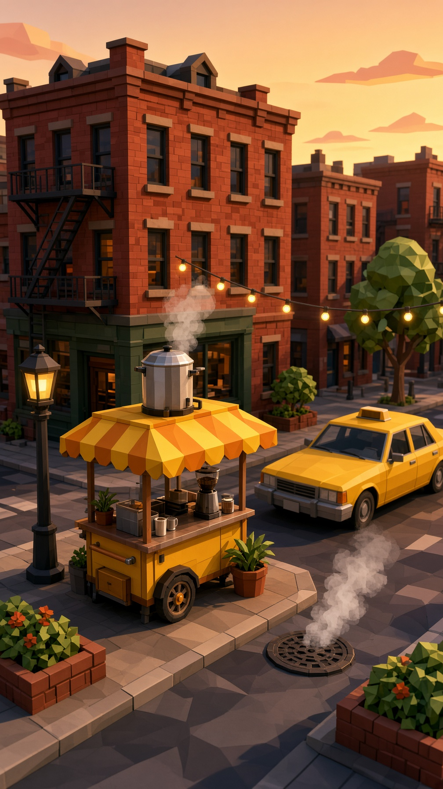
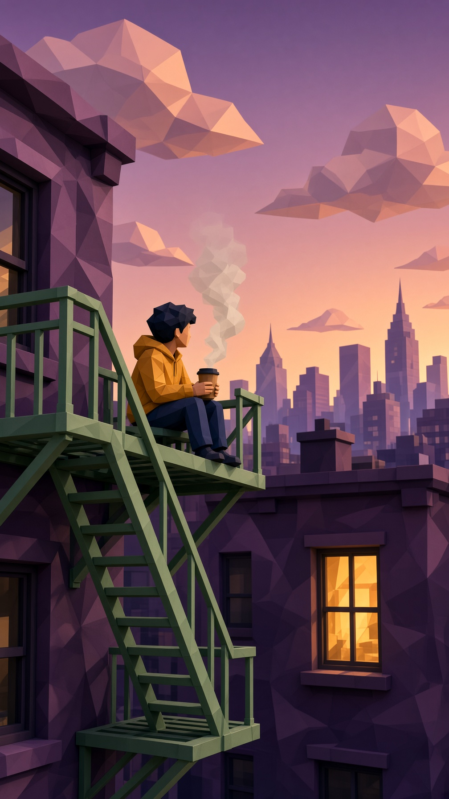
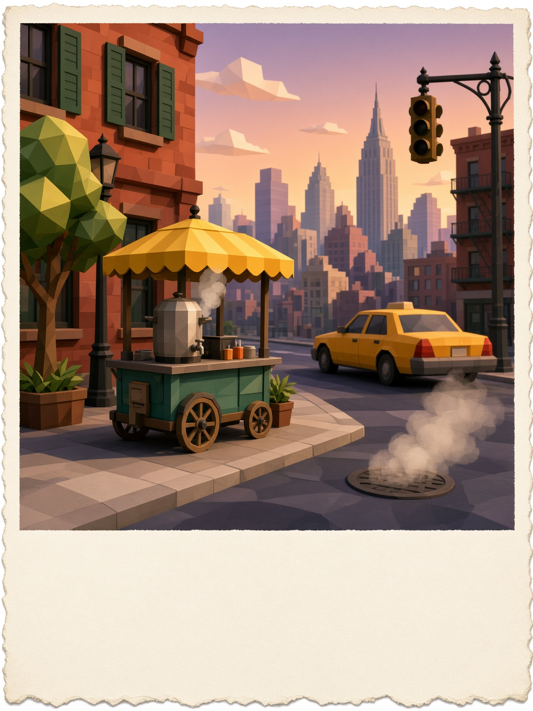
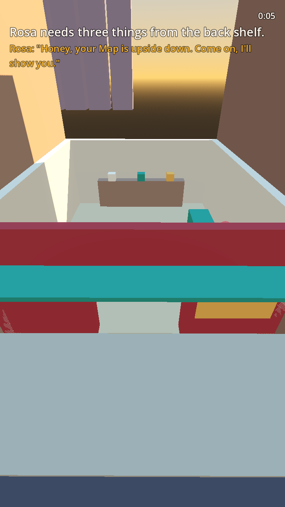
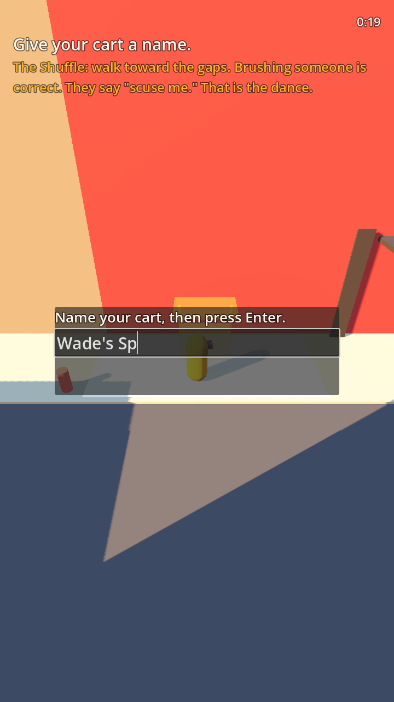
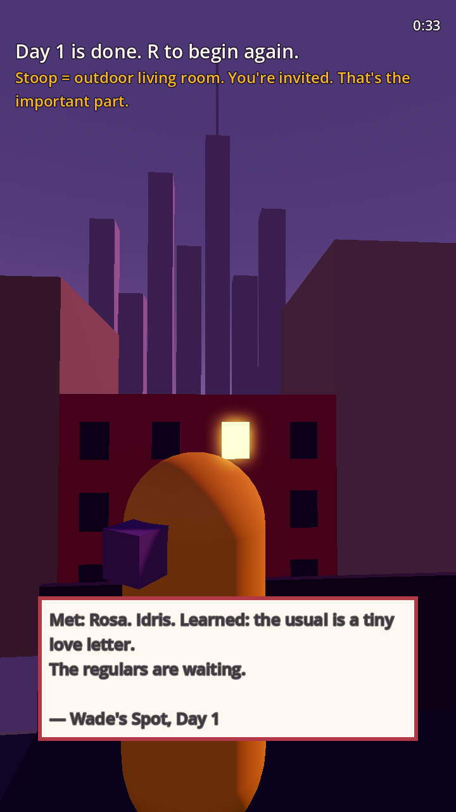
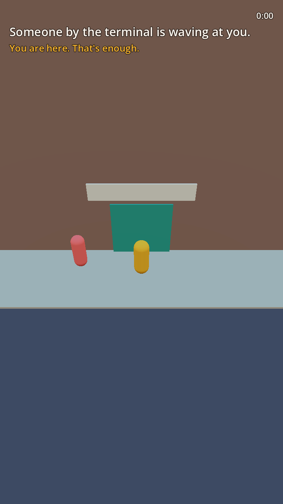
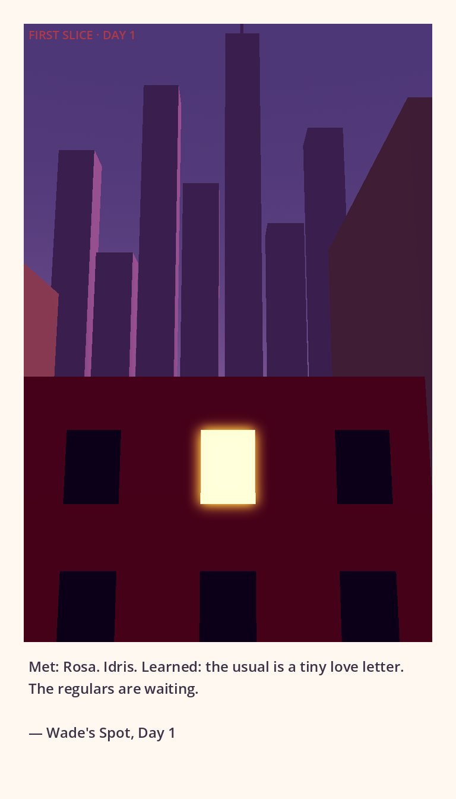

A New York Story
A cozy lowpoly life-sim for the billions of people who have never been to New York — but have always felt it.
View on GitHubYou arrive with $87 and a duffel bag. A bodega owner named Rosa takes pity on you. You get a cart. The city starts teaching you — patiently, warmly, one order and one postcard at a time.
Zero NYC knowledge assumed. The city itself is the tutorial. No quizzes. No gatekeeping.
Every session has a designed “I wish I could see that” moment. The game composes your memories for you.
Lowpoly, golden-hour, vertical-first. Every frame readable in one second of scrolling.
Official visual targets for production.

Primary daytime & cart reference.

Emotional dusk & Skyline of Lit Windows.

Border, composition, and keepsake feel.
The first 30 minutes are playable in Godot 4.7. You can walk from the terminal to the gold window and receive a real postcard.

First rush. First lessons. First kindness.

You name the cart. The city writes it down with you.

One window turns gold. Someone felt kept because of you.

You are here. That’s enough.

First real postcard generated by the game (TS-01 proven)
The city is still teaching us. We’re building the plane ticket that doesn’t cost flight money.